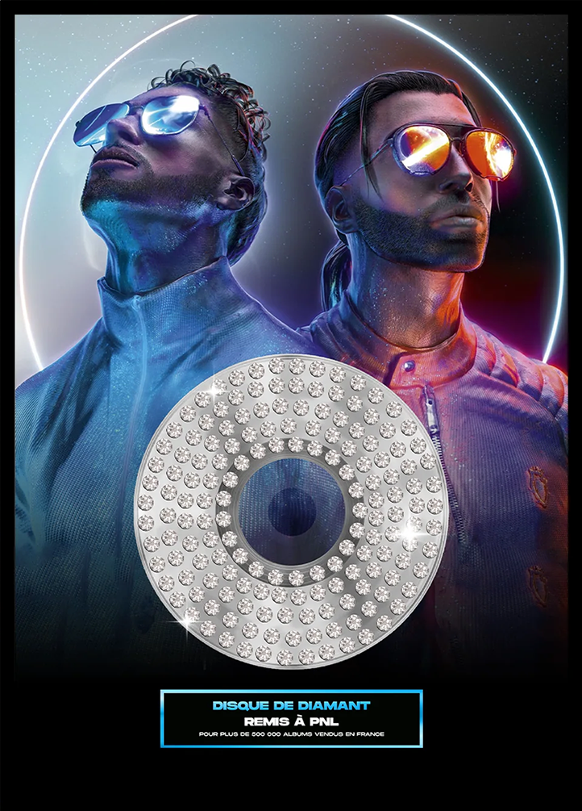

01 / MUSIQUE
Deux frères.
Une identité à part.
Entre mélancolie, mélodies planantes et images cinématographiques,
entre dans l'univers de PNL, le duo formé par Ademo et N.O.S.

UN RECORD HISTORIQUE
Sorti en 2019, Deux Frères entre dans l'histoire en devenant le premier album français dont les 16 titres originaux sont certifiés singles de diamant. Un exploit inédit, réalisé en totale indépendance.